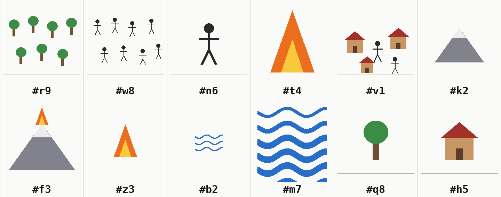

오늘의 숲
세상에 없던
언어
뜻 보기
1
직접 해 보기
이 말은 어떤 그림일까요?
메모 한 줄
넷 중 하나를 골라 보세요.
단서가 없으니 찍어도 돼요.
2
AI는 이렇게 배워요
AI가 받는 건 종이 세 장뿐
① 그림판

② 쓸 수 있는 글자
③ 지난 대화 메모
→
‘숲’을 말해 보라면
메모에서 통했던 말을
꺼내 써요
하루 두 번 AI 둘이 바뀌어요.
새 AI는 메모를 일부만, 가끔 틀리게 물려받아요.
3
말이 하나로 모여요
그림 섬
글자 섬
비교 섬
그냥 찍기 25%
4
언어의 규칙이 생겼어요
아무도 정해 주지 않은 규칙 두 개
① 단어를 합쳐 새 단어를 만들어요
② 자주 쓰는 말은 짧아져요
5
같은 조건, 다른 언어
섬 셋에서 각자 다른 언어가 태어났어요
6
솔직하게
이 실험이 말할 수 있는 것과 없는 것
AI 자체는 바뀌지 않아요
바뀌는 건 메모예요. 그래서 '학습'은 '메모를 보고 따라 하기'예요.
AI는 백지가 아니에요
산=ㅅ, 바다=ㅂ은 한국어 첫소리, 비교 섬의 산=ο는 그리스어 ‘όρος(산)’의 첫 글자와 같아요. 사람 말을 금지했는데도 새어 나온 흔적이에요.
섬마다 한 번씩만 돌렸어요
그래서 '증명'이 아니라 '관찰'이에요. 문법은 아직 없는 걸음마 언어예요.
메모가 없으면 얼마나 통할까?
오늘의 숲
이 언어는
지금도 자라요
사이트에서 직접 해 보기